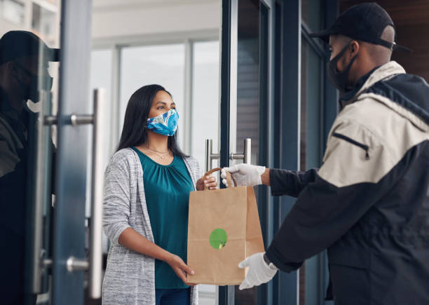

This was a unique project, because it has high patronage form
distinguish segment of Lagos State, like Lekki, Kosofe, Ikorodu, Ojota, Agege etc. I discovered through thorough analysis and insight visualization that they will possible have a very high churning rate. The suggestions I gave helped to reduce churning rate by 10%.
This analysis was performed using Tableau.

This company got in contact with us because they wanted to expand in
their business by adding new product lines. And suggested to know the performance of the current products. After analysis, we discovered that the
current product performance differs as the sales medium varies as well.

REDOX Airlines is very popular and wanted to know better about
their financial and data analytical performance. At the end of the analysis, we gave them suggestions on what Route and Aircraft they needed high level of maintenance,
and they gave them exact period the travelers uses the Route and Aircraft.

tThe system of renting films on video or DVD for a period of time in exchange for payment.
Once the customer has registered, they create a list of titles they wish to
watch, which are ranked by the customer by priority. Titles from the list are
mailed to the customer as they become available. The customer watches the films
or uses the media and then sends the discs back to the rental company
using the mail.

Today, with technology bridging gaps and making the global market more accessible,
the human touch is becoming a valued commodity. People are looking to connect,
to feel understood, and to trust the voices behind the messages they receive.
That’s where mastering the art of delivery comes into play. It’s not just a
skill; it’s your ticket to making meaningful
connections, building trust, and turning those connections into loyal customers.